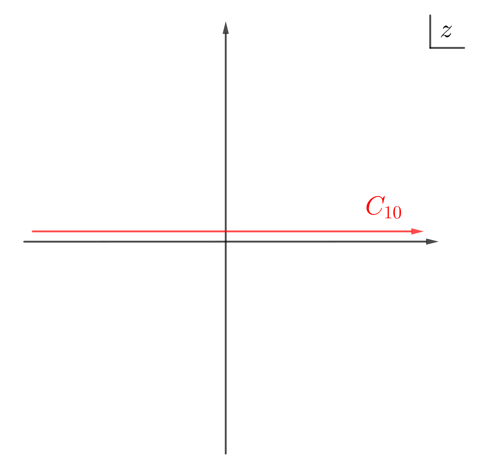
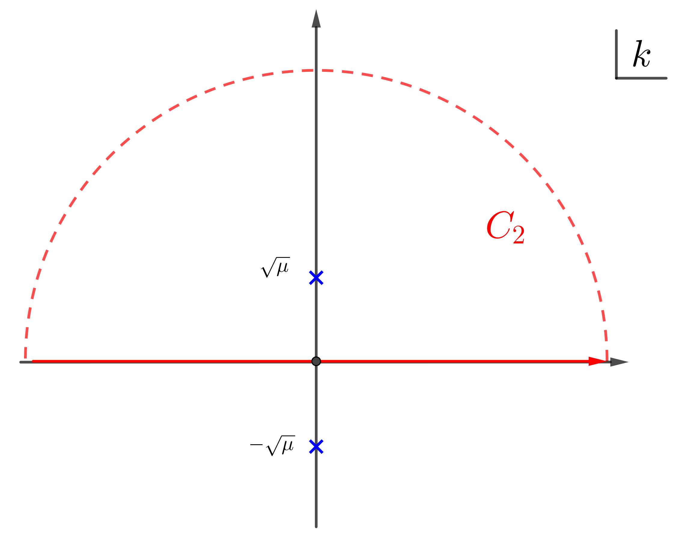

积分之一: 神奇的积分
$$\begin{align} I_1(a) = \int_0 ^{\infty} \frac{1}{(x - a + \mathrm{i}0^+)^2} \mathrm{d}x, \quad, a > 0 \end{align}$$看起来一定是发散的, 因为被积函数在 $x\to a$ 时是 $1/x^2$ 发散的( 图见 appendix).
但真正的结果不但不发散, 还是小于零的! 关键就在于分母上的 $\mathrm{i}0^+$ . $\mathrm{i}0^+$ 的存在使得积分路径上没有了奇异性. 如果我们做变量代换 $z = x + \mathrm{i}0^+$ , 并把从 $(-\infty, 0)$ 的积分也加进来, 那么积分就变为
$$\begin{align} I_{1C} = I_1(a) + \int_{-\infty}^0 \frac{1}{(x - a + \mathrm{i}0^+)^2} \mathrm{d}x = \int_{C_{10}} \frac{1}{(z - a)^2} \mathrm{d}z \end{align}$$其中积分的路径 $C_{10}$ 是沿整个实轴上方无穷小的距离. 图见 appendix.
由于 $I_{1C}$ 的被积函数在无穷远处是 $1/|z|^2\to 0$ 的, 贡献为 $0$ , 所以可以把上 半平面无穷远的大圆弧也加到积分路径上去, 此时路径变成 $C_1$ (图见 appendix).
被积函数在整个复平面上的 singularity 只有在 $z = a$ 处有一个二阶 pole, 在闭合的 积分路径 $C_{1}$ 内是处处解析的, 所以积分 $I_{1C} = 0$ . 由此就可以求出我们想要的积 分 $I_{1}(a)$ 啦!
$$\begin{align} I_1(a) =& I_{1C} - \int_{-\infty}^0 \frac{1}{(x - a + \mathrm{i}0^+)^2} \mathrm{d}x = - \int_{-\infty}^0 \frac{1}{(x - a + \mathrm{i}0^+)^2}\mathrm{d}x \\ =& - \int_{-\infty}^0 \frac{1}{(x - a)^2}\mathrm{d}x = - \left[ \frac{ - 1}{x-a} \right]_{-\infty}^0 = - \frac{1}{a} \end{align}$$除了像上面这样用留数定理计算外, 还可用一个求导的小 trick 直接利用 Sokhotski–Plemelj 公式计算 (积分与求导的交换, 本着如果交换给出收敛的结果, 那就可 以交换的原则 -_-!)
$$\begin{align} I_{1a} =& \frac{\partial}{\partial a} \int_0^{\infty} \frac{1}{x - a + \mathrm{i}0^+} \mathrm{d}x = \frac{\partial}{\partial a} \left[ \mathcal{P}\int_0^{\infty} \frac{1}{x - a} \mathrm{d}x - \mathrm{i}\pi \int_0^{\infty}\delta(x - a)\mathrm{d}x \right] \\ =& \frac{\partial}{\partial a} \left[ \ln \left|x - a \right|_0^{\infty} - \mathrm{i}\pi \right] = \frac{\partial}{\partial a} \left[ \ln \infty - \ln a\right] \\ =& -\frac{1}{a} \end{align}$$这也是我如何遇到这个积分的. 我遇到的是一个无法解析的积分, 但求导可以计算, 因此我 想把求导解析地求掉, 结果未完导发现积分看似发散, 实则并不发散, 但数值上不好处理.
积分之二: 有意思的积分
$$\begin{align} I_2(\mu) = \int_0^{\infty} \frac{k^2}{(k^2 - \mu)^2}\mathrm{d}k, \quad \mu < 0 \end{align}$$此积分我也想到了两种方法.
法一: 留数定理
被积函数有两个二阶 pole, $k = \pm \sqrt{\mu}$ . 被积函数在无穷远处 $1/|k|^2\to 0$ , 所以无穷远处对积分贡献为零, 可以把无穷远的大圆 弧加上, 因此积分路径是 $C_{2}$ (沿上半平面的无穷大半圆逆时针, 图见 appendix)
$$\begin{align} I_2(\mu) =& \frac{1}{2} \int_{-\infty}^{+\infty} \frac{k^2}{(k^2 - \mu)^2}\mathrm{d}k \\ =& \frac{1}{2}\oint_{C_2} \frac{k^2}{(k^2 - \mu)^2} \mathrm{d}k \\ =& \frac{1}{2}\oint_{C_2} \frac{k^2}{(k - \sqrt{\mu})^2 (k + \sqrt{\mu})^2} \mathrm{d}k \\ \end{align}$$包含二阶 pole 的积分可用公式(可以叫做高阶 pole 的留数定理?)(此处取 $n=1$ )
$$\begin{align} f^{(n)}(z) = \frac{n!}{2\pi \mathrm{i}}\oint \frac{f(\xi)}{(\xi - z)^{n+1}} \mathrm{d}\xi \end{align}$$所以
$$\begin{align} I_2(\mu) =\frac{1}{2}\times 2\pi \mathrm{i} \frac{\mathrm{d}}{\mathrm{d}k} \left.\left(\frac{k^2}{(k + \sqrt{\mu})^2} \right) \right|_{k=\mathrm{i}\sqrt{|\mu|}} = \frac{\mathrm{i}\pi}{4\sqrt{\mu}} \end{align}$$法二: 直接算
在实数范围内做不定积分:
$$\begin{align} \int \frac{k^2}{(k^2 - \mu)^2}\mathrm{d}k =& \frac{1}{2}\int\left[ \frac{k^2 + \mu}{(k^2 - \mu)^2} +\frac{k^2 - \mu}{(k^2 - \mu)^2} \right]\mathrm{d}k \\ = & \frac{1}{2}\left[ \int\frac{k^2 + \mu}{(k^2 - \mu)^2} +\int \frac{1}{k^2 - \mu}\mathrm{d}k \right] \\ = & \frac{1}{2}\left[\frac{-k}{k^2 - \mu} - \frac{1}{\sqrt{\mu}} \mathrm{arctanh} \left( \frac{k}{\sqrt{\mu}} \right) \right] + C \\ \end{align}$$其中 $C$ 是积分常数.
然后代入上限和下限算得定积分
$$\begin{align} I_2(\mu) = \frac{1}{2}\left[ 0 - \frac{1}{\sqrt{\mu}}\left(-\mathrm{i}\frac{\pi}{2} - 0\right) \right] = \frac{ \mathrm{i}\pi}{4\sqrt{\mu}} \end{align}$$总结
两个积分的共同特点是都有二阶 pole.
Appendix
$I_{1(a)}$ 的被积函数在 $x\to a$ 时看起来是 $1/x^2$ 发散的:




Acknowledge
- Fan Yang 的讨论
- Mathematica